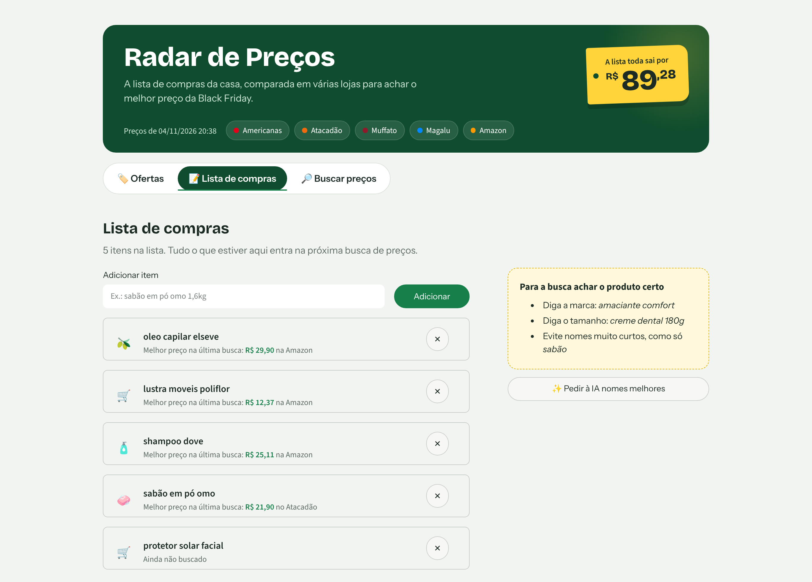
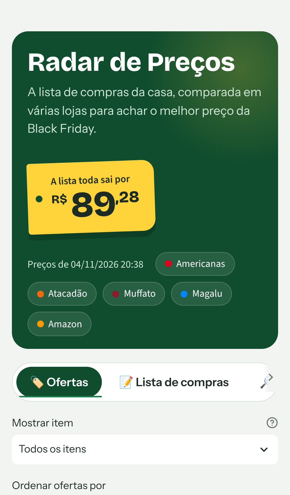

Visão geral
- O que faz: procura cada item da lista em Americanas, Atacadão, Muffato, Magalu e Amazon, calcula o preço por litro, por 100 g, por 10 m ou por unidade, e pede a uma IA as duas melhores compras de cada item.
- Para quem: quem faz a compra do mês de casa, higiene e limpeza e quer saber onde cada item sai mais barato, sem abrir cinco sites.
- O que entrega: um painel web, que funciona no celular, com a melhor escolha de cada item, todas as ofertas comparáveis, o total da lista e o gráfico do preço ao longo dos dias.
O problema e a solução
Comparar uma lista de 37 itens em cinco lojas exige 185 buscas. E os preços não se comparam direto: amaciante de 500 ml contra galão de 5 L, papel higiênico de 12 rolos de 20 m contra 24 rolos de 30 m. A busca das lojas ainda devolve produtos que não têm nada a ver com o pedido.
- ListaA família edita a lista no painel, pelo celular ou pelo computador.
- ColetaLojas VTEX pela API, em paralelo. Magalu e Amazon por um Chrome real.
- Preço por unidadeExpressões regulares leem "1,5L", "3x120fls" e "kit 3 un" no título.
- Curadoria por IATira o que não é o produto pedido e escolhe as duas melhores compras.
- HistóricoCada busca vai para o SQLite, e o painel mostra a variação e o gráfico.
O painel
A melhor escolha aparece numa etiqueta amarela, como as de gôndola de supermercado. Ao lado ficam todas as ofertas, com o preço por unidade. O que a IA tirou da comparação fica recolhido no fim da lista.


Decisões que vieram de erros reais
Cada decisão abaixo veio de um problema observado com dados de verdade. A lista completa, com as medições, está na documentação.
A IA estava supondo coisas
A comparação errada do histórico
O título que perdeu a vírgula
O Mercado Livre e o captcha
Black Friday 2026: o desconto foi real?
O histórico diário existe para responder a esta pergunta: os preços caíram de verdade, ou subiram nas semanas anteriores para o "desconto" parecer maior?
- Regras definidas antes dos dados, num pré-registro de 05/11/2026: janelas, limiar de 5% e o que conta como "maquiagem de desconto".
- Um grupo de controle: 10 itens de casa × 10 itens típicos de Black Friday (escolhidos a partir dos levantamentos dos Procons), numa lista fixa congelada em 05/11.
- O mesmo produto acompanhado todo dia, por uma chave estável (na Amazon, o código ASIN).
- Método validado num banco simulado com padrões conhecidos, antes de existirem dados reais.
- Resultado: publicado nesta página depois de 30/11.